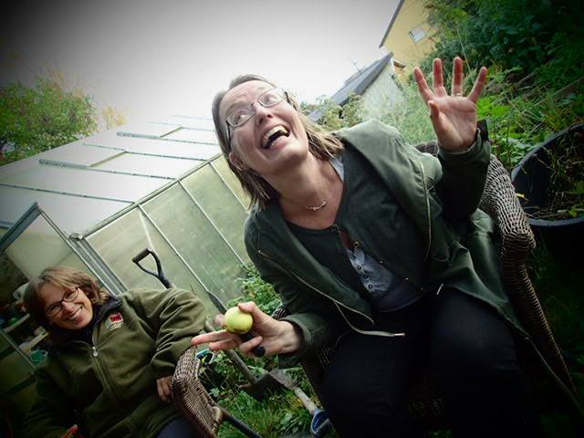

Client: Saft & Suse
Contact: Torborg Galteland, Pressesjef at Saft & Suse.
Saft & Suse is a hobby group consisting of Torborg Galteland and Jørgen Stenersen and a rotating cast of friends. Together they press and conserve their own apple juice. In addition to making their apple juice they also discuss all things apple related, from how to build your own press to what apples make the best cider. Saft & Suse have their own brand of humor leaning heavily on their image as "the small underdog apple juice producer" and an unhealthy fascination with apple and press related puns. Working with Saft & Suse we will build a website where they can share their accumulated knowledge with other apple enthusiasts.
The purpose of saftogsuse.no will be to present user with an overview of the basic equipment and techniques one would need to make your own apple juice. The site will also serve as Saft & Suses static presence on the web, interested parties will be directed to saftogsuse.no to glimpse into what the group does. The webpage will in this regard work in tandem with their existing Facebook page which is more frequently updated. Last but not least Saft & Suse hopes this webpage will help inspire new apple pressers to press on with their new hobby.
The website’s target audience is primarily those who want to learn more about making their own apple juice, but also those who are interested in the environment and healthy food and beverages in general.
The landing page will have a fixed navigation bar at the top of page, as well as several large pictures (provided by the client) linking to the different pages. We imagine the user will be able to scroll down the page to view all the pictures. The user will be able to navigate the site through clicking on the menu or on the pictures. The website is mainly intended, as mentioned, for people who have an interest in apples and apple pressing. The site will therefore contain several pages providing information about this topic. As our client is knowledgeable in this area she will provide us with the information and pictures that should be included in each page. The website will consist of the following pages:
This page will contain a brief text piece with some information about Saft & Suse, who the people behind it are, and how it all began. Providing the user with the story behind Saft & Suse will give the website a more personal and approachable feel which is in line with the client’s wishes.
This page will describe the apple varieties most suitable for apple pressing, as well as where you can obtain these apples if you are not able to grow your own. This section will also contain pictures of the different kinds of apples. This will provide a useful starting point for people with little or no experience in growing and pressing apples.
This page will explain how to build an apple press. It will include visual examples of presses and also build designs that show how to assemble your own press. The page will also contain information about where to buy an apple press.
This page will contain a step-by-step guide with accompanying pictures that explains in detail how to make your own homemade apple juice. By providing a detailed but simple explanation of the steps involved in the juicing process, it is the client’s aim to demonstrate how anyone can produce their own homemade apple juice. A list of necessary ingredients and tools will also be included in this page.
Saft & Suse have, despite their name, also dabbled in brewing apple cider. This page will look similar to the previous page, but will instead include a step-by-step guide (with accompanying pictures) illustrating how to brew your own cider from scratch. The page will also contain a list of ingredients and tools that are needed.
This page will contain an overview of upcoming events organised by Saft & Suse. This will typically include nights where the group gets together to press juice. Each event will provide a description of the event, the date, and road map instructions. The intended goal of this page will be to expand the network of Saft & Suse as well as introduce interested newcomers to the art of making delicious apple juice. The client will be able to update this page in order to post about new events. This page might not make it into the final version as the client has not yet decided if they want this to be a part of the site.
This page will contain the name, picture and title of the core members of Saft & Suse. Within the group, the regulars have been assigned positions and accompanying titles. Taking inspiration (and keeping with the theme of pressing puns) from the world of newspapers, some of the position within the group includes presse sjef og presseattaché.
Our client wants a modern website, but that is at the same time not too minimalistic (and impersonal as a result). The client expressed a wish for the website to have a clean design while still being cozy and welcoming. Beyond what has already been mentioned the client did not have too many other specific preferences and mentioned that she was happy to let us express ourselves relatively freely in terms of the website’s design. She did however suggest that we take inspiration from environmentally conscious websites with great design.
We will host the website on the NTNU servers. Our client owns the domain 'www.saftogsuse.no', and may host it there in the future.